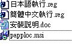
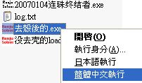
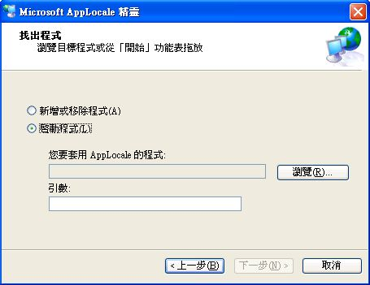
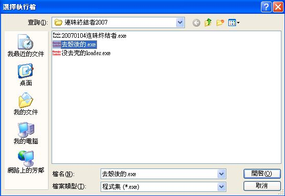
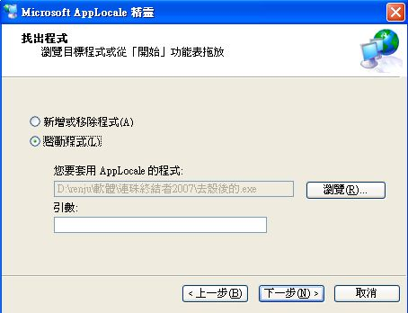
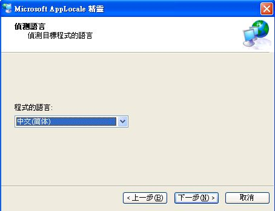
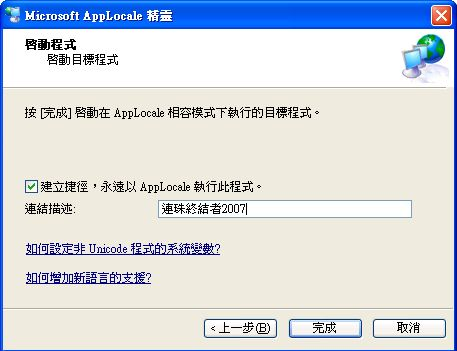
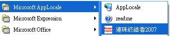

Piaip Applocale 使用說明
win7作業系統，好像沒法用，但我也不清楚 
解壓後檔案如下
先執行"papploc.msi"來安裝，正常來說一直按下一步就可以安裝成功
安裝好後，再點兩下"簡體中文執行.reg"，將它加到登入檔裡
再來有兩個方法，我們以連珠終結者2007為例 
方法一：
對要開啟的程式，按右鍵，選擇簡體中文執行，如下圖
缺點是下次要打開，還要找到該程式的位置再開啟
如果該程式很常用，建議用方法二
方法二：
按左下角開始＞所有程式＞Microsoft AppLocale＞AppLocale
選下一步後會出現下面視窗，選擇啟動程式，再按瀏覽

找到要開啟的程式，按開啟





可以把捷徑拖曳到桌面或快速啟動列